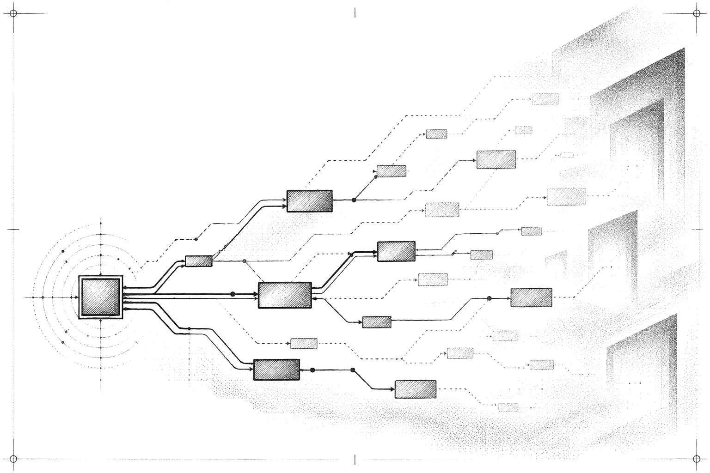

Research paper · Research archive
Ghost Portal Cartographer
Evidence-tiered mapping of indirect sensitive-data egress.
Research status
Open-source research software with a research paper, archived on Zenodo. Not a peer-reviewed article. Results are graph-relative: 171 tests, two separately coded oracles, and exhaustive small-graph enumeration support the kernel's search properties, but they are not a formal proof and do not demonstrate real-world leak detection. All evaluation uses synthetic graphs.
Paper preview


Abstract
Sensitive information can cross a security boundary through logs, traces, memory artifacts, caches, backups, and integrations even when the primary application response is protected. Ghost Portal Cartographer (GPC) analyzes these indirect routes as a finite, declared artifact-version graph without inspecting payload contents. Three independently bounded searches distinguish reported scalar-ordered lineage, reported lineage with unresolved order, and possible data or unknown-content reachability.
A positive witness survives resource exhaustion in another search, and the selected witness is labeled by the strongest relation it satisfies. Trace parentage remains unauthenticated context, not proof of transferred data. A local HMAC demonstration authenticates declared transformation metadata, bound to the artifacts and trust domains it describes; it cannot establish sanitization or exclude a candidate route. These results support graph-relative search properties under stated assumptions; they do not establish verified exfiltration, complete observation, formal verification, or production readiness.
Methods
- Derive three nested edge relations from the declared graph: possible, reported (observed with an evidence locator), and ordered-eligible (reported with a sequence).
- Run an ordered search over (vertex, last sequence) states and vertex searches over the reported and possible relations, each with its own budget.
- Select the first returned witness, re-verify it against the stronger predicates, and report UNKNOWN_LIMIT only when no witness was found and the broadest search did not finish.
Key observations
- 171 Python standard-library tests pass on CPython 3.9 through 3.15.
- Two separately coded oracles agree with the kernel on randomized graphs, and exhaustive enumeration covers 512 possible-edge graphs and 625 observation mappings.
- Eleven deliberately faulty variants of the kernel are detected by the test suite.
- The research paper, source archive, and SHA-256 checksum manifest are archived on Zenodo.
Known limitations
- GPC is a read-only research model, not a data-loss-prevention product, runtime collector, or enforcement mechanism.
- Inputs are unauthenticated declarations; a fabricated edge can create a false route and an omitted edge can hide a real one.
- Declared digests are not verified against artifact bytes, and an authenticated transformation claim does not establish sanitization.
- The results are not a machine-checked formal proof, and no real-world or canary-based detection study has been performed.
- The search budget bounds popped states, not memory; large inputs must be size-limited upstream.
Summarized from the paper. The full list is in its section on limitations, failure modes, and open research problems.
Artifacts
- DOI10.5281/zenodo.24267416
- PaperPDF, version 1.0.0
- SourcePaper source and reproducibility artifacts
- ReleaseVersion 1.0.0
- ArchiveZenodo record
- AuthorORCID 0009-0001-6573-385X
Cite this work
Plain text
Thor, T. (2026). Ghost Portal Cartographer: Evidence-Tiered Mapping of
Indirect Sensitive-Data Egress (1.0.0). Zenodo.
https://doi.org/10.5281/zenodo.24267416BibTeX
@misc{thor2026gpc,
author = {Thor, Thor},
title = {Ghost Portal Cartographer: Evidence-Tiered Mapping of Indirect Sensitive-Data Egress},
year = {2026},
version = {1.0.0},
publisher = {Zenodo},
doi = {10.5281/zenodo.24267416},
url = {https://doi.org/10.5281/zenodo.24267416}
}Version history
- Version 1.0.0 · Initial public release, archived on Zenodo. All-versions DOI 10.5281/zenodo.24267415.